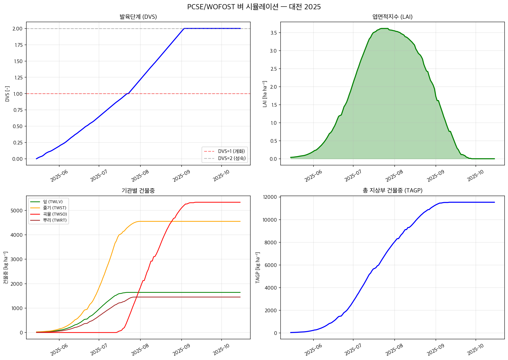
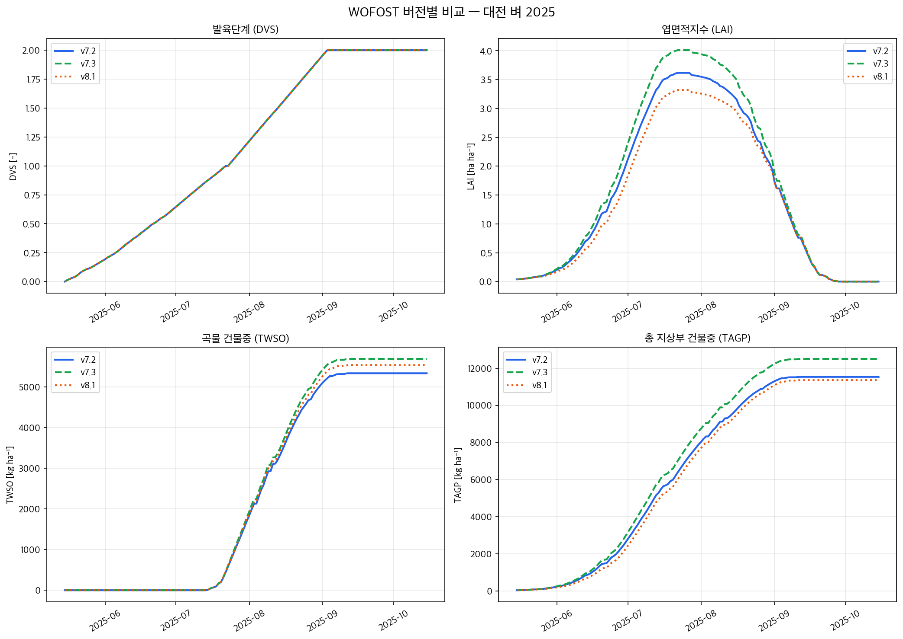

Week 6 — 스마트 온실 모델링 이론과 개발 실습
PCSE = 프레임워크, WOFOST = 모델
PCSE (Python Crop Simulation Environment)는 네덜란드 Wageningen University에서 개발한 작물 시뮬레이션 프레임워크입니다. PCSE 자체는 특정 작물 모델이 아니라, 다양한 모델을 실행할 수 있는 플랫폼입니다.
PCSE에 내장된 모델들
| 모델 | 설명 |
|---|---|
| WOFOST 7.1 ~ 8.1 | 범용 작물 생장 모델 (오늘 사용) |
| LINTUL3 | 질소 제한 작물 생장 모델 |
| LINGRA | 초지(grassland) 생산성 모델 |
| FAO WRSI | FAO 수분 요구량 충족 지수 |
이번 실습에서는 PCSE 위에서 WOFOST 7.2 (Potential Production) 모델을 실행합니다.
PCSE의 특징
WOFOST (WOrld FOod STudies)
일별(daily) 시간 스텝으로 작물 생장을 시뮬레이션하는 프로세스 기반 모델입니다.
| 수준 | 모델 클래스 | 설명 |
|---|---|---|
| PP Potential | Wofost72_PP |
빛과 온도만 고려. 물/양분 제한 없음 |
| WLP Water-limited | Wofost72_WLP_FD |
수분 스트레스 포함. 토양수분 수지 계산 |
| 변수 | 의미 | 단위 |
|---|---|---|
DVS | 발육단계 (0=출현, 1=개화, 2=성숙) | - |
LAI | 엽면적지수 (Leaf Area Index) | ha ha-1 |
TAGP | 총 지상부 건물중 | kg ha-1 |
TWSO | 저장기관 (곡물/과실) 건물중 | kg ha-1 |
TWLV | 잎 건물중 | kg ha-1 |
TWST | 줄기 건물중 | kg ha-1 |
TWRT | 뿌리 건물중 | kg ha-1 |
# uv 설치 (아직 없다면) curl -LsSf https://astral.sh/uv/install.sh | sh # 프로젝트 폴더에서 의존성 설치 (venv 자동 생성) cd week6_PCSE uv sync # 스크립트 실행 uv run python run_pcse_example.py
pip install pcse matplotlib pandas pyyaml
Tip
uv sync 한 번이면 Python 가상환경 생성 + 의존성 설치가 자동으로 끝납니다. uv.lock 파일이 생성되어 동일한 환경을 재현할 수 있습니다.
아래 코드를 단계별로 따라가며 PCSE/WOFOST 시뮬레이션을 실행합니다.
import datetime as dt import yaml import matplotlib.pyplot as plt import matplotlib as mpl import pandas as pd from pcse.models import Wofost72_PP from pcse.input import ( YAMLCropDataProvider, OpenMeteoWeatherDataProvider, DummySoilDataProvider, WOFOST72SiteDataProvider, ) from pcse.base import ParameterProvider # 한글 폰트 설정 (OS별 자동 선택) import platform if platform.system() == "Darwin": mpl.rcParams["font.family"] = "Apple SD Gothic Neo" elif platform.system() == "Windows": mpl.rcParams["font.family"] = "Malgun Gothic" else: mpl.rcParams["font.family"] = "NanumGothic" mpl.rcParams["axes.unicode_minus"] = False
OpenMeteo API를 통해 대전(36.35°N, 127.38°E)의 일별 기상자료를 자동으로 받아옵니다.
wdp = OpenMeteoWeatherDataProvider( latitude=36.35, longitude=127.38 ) print(f"기간: {wdp.first_date} ~ {wdp.last_date}")
내부적으로 일사량, 최고/최저기온, 풍속, 강수량, 이슬점 등을 받아와 WOFOST가 필요한 형식으로 변환합니다.
# 작물: PCSE 내장 벼 파라미터 cropd = YAMLCropDataProvider() cropd.set_active_crop("rice", "Rice_501") # 토양 & 사이트 (Potential Production에서는 사실상 미사용) soild = DummySoilDataProvider() sited = WOFOST72SiteDataProvider(WAV=100) # 파라미터 통합 params = ParameterProvider( cropdata=cropd, soildata=soild, sitedata=sited )
YAML 형식으로 파종일, 수확일, 재배 방식을 정의합니다.
agro_yaml = """ - 2025-05-01: CropCalendar: crop_name: rice variety_name: Rice_501 crop_start_date: 2025-05-15 crop_start_type: emergence crop_end_date: 2025-10-15 crop_end_type: harvest max_duration: 200 TimedEvents: null StateEvents: null """ agro = yaml.safe_load(agro_yaml)
| 항목 | 값 | 의미 |
|---|---|---|
crop_start_date | 2025-05-15 | 출현(emergence) 날짜 |
crop_end_date | 2025-10-15 | 수확(harvest) 날짜 |
max_duration | 200 | 최대 재배일수 |
# 모델 생성 & 실행 wofost = Wofost72_PP(params, wdp, agro) wofost.run_till_terminate() # 결과를 DataFrame으로 변환 output = wofost.get_output() df = pd.DataFrame(output) df = df.dropna(subset=["DVS"]) # 출현 전 행 제거 df["day"] = pd.to_datetime(df["day"]) df = df.set_index("day") # 요약 결과 summary = wofost.get_summary_output()[0] print(f"최대 LAI: {summary['LAIMAX']:.2f}") print(f"곡물수량: {summary['TWSO']:.0f} kg/ha") print(f"개화일: {summary['DOA']}") print(f"성숙일: {summary['DOM']}")
fig, axes = plt.subplots(2, 2, figsize=(14, 10)) fig.suptitle("PCSE/WOFOST - 대전 2025", fontsize=15, fontweight="bold") # DVS axes[0,0].plot(df.index, df["DVS"], "b-") axes[0,0].axhline(y=1.0, color="r", linestyle="--", alpha=0.5) axes[0,0].set_title("DVS") # LAI axes[0,1].fill_between(df.index, df["LAI"], color="green", alpha=0.3) axes[0,1].plot(df.index, df["LAI"], "g-") axes[0,1].set_title("LAI") # 기관별 건물중 axes[1,0].plot(df.index, df["TWLV"], "g-", label="Leaves") axes[1,0].plot(df.index, df["TWST"], "orange", label="Stems") axes[1,0].plot(df.index, df["TWSO"], "r-", label="Grain") axes[1,0].plot(df.index, df["TWRT"], "brown", label="Roots") axes[1,0].legend() axes[1,0].set_title("Organ Dry Matter") # TAGP axes[1,1].plot(df.index, df["TAGP"], "b-") axes[1,1].set_title("TAGP") plt.tight_layout() plt.savefig("result_rice_daejeon_2025.png", dpi=150) plt.show()
대전 벼 (Rice_501) — 2025년
| 항목 | 결과 |
|---|---|
| 출현일 (DOE) | 2025-05-15 |
| 개화일 (DOA) | 2025-07-23 |
| 성숙일 (DOM) | 2025-09-03 |
| 수확일 (DOH) | 2025-10-15 |
| 최대 LAI | 3.62 ha/ha |
| 곡물 수량 (TWSO) | 5,336 kg/ha |
| 총 지상부 (TAGP) | 11,532 kg/ha |
아래 그래프에서 DVS, LAI, 기관별 건물중, TAGP의 시간 변화를 확인할 수 있습니다.

시뮬레이션 결과 vs 한국 벼 실측값
WOFOST 기본 파라미터(Rice_501)는 한국 품종에 맞게 보정(calibration)된 것이 아니므로, 실측과 차이가 있을 수 있습니다.
| 항목 | 시뮬레이션 | 한국 실측 범위 | 평가 |
|---|---|---|---|
| 곡물수량 (건물중) | 5,336 kg/ha | 5,000 ~ 6,500 kg/ha | 적정 범위 |
| 최대 LAI | 3.62 | 4.0 ~ 7.0 | 다소 낮음 |
| TAGP (총 지상부) | 11,532 kg/ha | 12,000 ~ 16,000 kg/ha | 다소 낮음 |
| 수확지수 (HI) | 0.46 | 0.40 ~ 0.50 | 적정 범위 |
참고: 한국 벼 통계 — KOSIS/FAO 기준 최근 전국 평균 조곡 수량 약 6,800~7,200 kg/ha (수분 14% 기준).
LAI가 실측보다 낮은 것은 SLATB(비엽면적), RGRLAI(상대엽면적성장률) 등 한국 자포니카 품종에 맞는 보정이 필요함을 의미합니다.
PCSE에는 WOFOST의 여러 버전이 내장되어 있어, 같은 조건에서 버전별 차이를 비교할 수 있습니다.
WOFOST 버전별 특징
| 버전 | 모델 클래스 | 추가 기능 |
|---|---|---|
| 7.2 | Wofost72_PP | 기본 (빛 + 온도) |
| 7.3 | Wofost73_PP | + CO2 반응 |
| 8.1 | Wofost81_PP | + CO2 + 질소 수지 |
버전별 비교 결과 (대전 벼 2025, Potential Production)
| 항목 | v7.2 | v7.3 (CO2=400ppm) | v8.1 (CO2+N) |
|---|---|---|---|
| 곡물수량 (kg/ha) | 5,336 | 5,690 | 5,538 |
| TAGP (kg/ha) | 11,532 | 12,502 | 11,357 |
| 최대 LAI | 3.62 | 4.01 | 3.32 |
| 개화일 | 2025-07-23 (동일) | ||
| 성숙일 | 2025-09-03 (동일) | ||
v7.3은 CO2 시비 효과로 수량이 +6.6% 증가하며, v8.1은 질소 제한으로 다시 소폭 감소합니다.

from pcse.models import Wofost72_PP, Wofost73_PP, Wofost81_PP from pcse.input import ( WOFOST72SiteDataProvider, WOFOST73SiteDataProvider, WOFOST81SiteDataProvider_Classic, ) # v7.2: 빛 + 온도만 cropd = YAMLCropDataProvider(model=Wofost72_PP) sited = WOFOST72SiteDataProvider(WAV=100) # v7.3: + CO2 반응 cropd = YAMLCropDataProvider(model=Wofost73_PP) sited = WOFOST73SiteDataProvider(WAV=100, CO2=400) # v8.1: + CO2 + 질소 cropd = YAMLCropDataProvider(model=Wofost81_PP) sited = WOFOST81SiteDataProvider_Classic( WAV=100, CO2=400, NAVAILI=100, NSOILBASE=50, NSOILBASE_FR=0.025, )
Tip
YAMLCropDataProvider(model=...)에 모델 클래스를 넘기면, 해당 버전에 맞는 작물 파라미터를 자동으로 가져옵니다. 전체 코드는 run_compare_versions.py를 참고하세요.
YAMLCropDataProvider에 포함된 작물과 품종입니다. 아래 작물명/품종명을 set_active_crop()에 넣어 바로 사용할 수 있습니다.
| 작물 | 품종 (예시) |
|---|---|
| wheat | Winter_wheat_101 ~ 107, bermude, apache |
| rice | Rice_501, Rice_IR64, Rice_IR72 등 |
| maize | Grain_maize_201 ~ 205, Fodder_maize_nl |
| potato | Potato_701 ~ 704, Innovator, Fontane 등 |
| barley | Spring_barley_301 |
| soybean | Soybean_901 ~ 906 |
| sugarbeet | Sugarbeet_601 ~ 604 |
| rapeseed | Oilseed_rape_1001 ~ 1004 |
| sunflower | Sunflower_1101 |
| 기타: cassava, chickpea, cotton, cowpea, fababean, groundnut, millet, mungbean, pigeonpea, sorghum, sugarcane, sweetpotato, tobacco, seed_onion | |
데이터 출처: 농촌진흥청 국립식량과학원
공공데이터포털에서 벼 작황 성적 정보 서비스 API를 통해 실측 데이터를 받아올 수 있습니다.
| 항목 | 내용 |
|---|---|
| API | 농촌진흥청 국립식량과학원_벼 작황 성적 정보 서비스 |
| 제공 데이터 | 재배법, 생육조사 9회차 (초장/경수/수수/건물중/수량 등) |
| 비용 | 무료 (회원가입 → 활용신청 → 자동승인, 1~2시간 후 활성화) |
| 회차 | 엔드포인트 | 주요 항목 |
|---|---|---|
| 1회차 | getExprTmrd_01List_v2 | 파종기, 이앙기, 재식거리, 모건물중 |
| 2~5회차 | getExprTmrd_02~05List_v2 | 초장, 주당경수, m2당경수 |
| 6회차 | getExprTmrd_06List_v2 | 수당립수, m2당수수 |
| 8회차 | getExprTmrd_08List_v2 | 잎/줄기/이삭 건물중 (WOFOST 비교에 핵심) |
| 9회차 | getExprTmrd_09List_v2 | 10a당 수량 (정조/현미/백미), 등숙비율 |
아래에서 API 인증키를 입력하고 버튼을 누르면 바로 데이터를 조회할 수 있습니다.
WOFOST vs 농촌진흥청 벼 작황 실측 (2023, 전국 76건 평균)
| 항목 | WOFOST 시뮬레이션 | 농진청 실측 | 차이 |
|---|---|---|---|
| 곡물수량 (건물중) | 5,923 kg/ha | 6,484 kg/ha (정조 7,539 × 0.86) | -8.6% |
| 현미수량 | - | 6,250 kg/ha (625 kg/10a) | - |
| 백미수량 | - | 5,740 kg/ha (574 kg/10a) | - |
| 등숙비율 | - | 89.5% | - |
| 정조천립중 | - | 27.3 g | - |
| 최대 LAI | 3.39 | (미제공) | 실측 대비 낮을 가능성 |
| TAGP (총 지상부) | 11,435 kg/ha | (미제공) | - |
9회차 컬럼 매핑 (exam → 실제 항목)
API 응답의 exam1~exam7은 아래와 같은 항목입니다.
| 컬럼 | 항목 | 단위 | 2023 평균 |
|---|---|---|---|
pajong | 등숙비율 | % | 89.5 |
exam1 | 10a당 수량 (정조중) | kg/10a | 753.9 |
exam3 | 정조 천립중 | g | 27.3 |
exam4 | 10a당 수량 (현미중) | kg/10a | 625.0 |
exam5 | 정현비율 | % | 82.9 |
exam6 | 현미 천립중 | g | 23.0 |
exam7 | 10a당 수량 (백미중) | kg/10a | 574.0 |
해석
WOFOST의 TWSO(곡물 건물중)는 정조(rough rice)에서 수분(~14%)을 뺀 값에 해당합니다. 실측 정조수량 7,539 kg/ha × 0.86 = 6,484 kg/ha와 비교하면 WOFOST는 약 8.6% 과소추정으로, 보정 없이도 합리적 수준입니다.
과제 1: 작물 바꿔보기
벼 대신 감자(potato)로 바꾸어 시뮬레이션을 실행해 보세요.
cropd.set_active_crop("potato", "Potato_701") # 감자 재배 기간도 변경 필요 (4월~9월) agro_yaml = """ - 2025-04-01: CropCalendar: crop_name: potato variety_name: Potato_701 crop_start_date: 2025-04-15 crop_start_type: emergence crop_end_date: 2025-09-30 crop_end_type: harvest max_duration: 200 TimedEvents: null StateEvents: null """
과제 2: 지역 바꿔보기
대전 대신 다른 지역의 좌표를 넣어 기상조건에 따른 수량 변화를 비교해 보세요.
# 예: 제주 (33.50°N, 126.53°E) wdp_jeju = OpenMeteoWeatherDataProvider( latitude=33.50, longitude=126.53 ) # 예: 춘천 (37.88°N, 127.73°E) wdp_cc = OpenMeteoWeatherDataProvider( latitude=37.88, longitude=127.73 )
과제 3: 파종일 변경 효과
출현일을 5월 1일, 5월 15일, 6월 1일로 바꿔가며 수량 변화를 비교해 보세요.